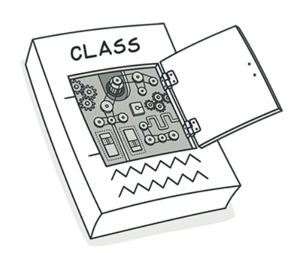
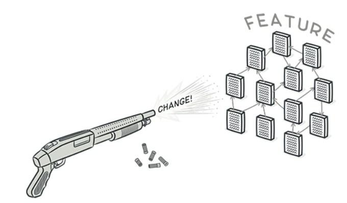
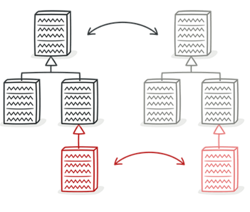

Divergent Change

Divergent Change terjadi ketika perubahan yang dilakukan pada kode memerlukan modifikasi pada beberapa bagian yang berbeda dari sistem yang tidak terkait secara konseptual. Ini menunjukkan bahwa fitur atau fungsionalitas tertentu terlalu tersebar di berbagai bagian kode yang tidak saling terkait. Ketika ada perubahan pada fitur itu, pengembang harus menyunting banyak bagian kode yang terpisah. Divergent Change membuat kode sulit dipahami, dikelola, dan diperbarui. Solusi untuk masalah ini mungkin melibatkan refactoring untuk menyatukan atau mengelompokkan kode yang berkaitan dengan fitur tertentu.
Contoh Code nya sebagai berikut :
Sebelum Refactor | Setelah Refactor
Shotgun Surgery

Shotgun Surgery terjadi ketika satu perubahan kecil pada sistem memerlukan modifikasi pada banyak bagian kode yang berbeda. Analogi yang digunakan adalah seperti menembak dengan senapan yang menyebar, di mana perubahan yang kecil memiliki efek yang tersebar luas di berbagai bagian kode. Ini menunjukkan bahwa sistem mungkin terlalu ketergantungan pada beberapa komponen atau bahwa fungsionalitas terlalu terinterkoneksi. Solusi untuk Shotgun Surgery mungkin melibatkan penggabungan atau pengelompokan fungsionalitas terkait agar perubahan dapat dilakukan dengan lebih efisien.
Contoh Code nya sebagai berikut :
Sebelum Refactor | Setelah Refactor
Parallel Inheritance Hierarchies

Parallel Inheritance Hierarchies terjadi ketika ada dua atau lebih hierarki kelas yang saling bergantung dan berkembang bersamaan. Setiap kali ada perubahan dalam satu hierarki, perubahan serupa atau terkait juga diperlukan di hierarki lainnya. Ini meningkatkan kompleksitas dan ketergantungan antara kedua hierarki, membuat perubahan menjadi lebih sulit dan berpotensi menyebabkan kesalahan. Solusi untuk masalah ini mungkin melibatkan konsolidasi hierarki kelas atau menggunakan pola desain yang lebih cocok untuk mengelola hubungan antara kelas-kelas tersebut.
Contoh Code nya sebagai berikut :
Sebelum Refactor | Setelah Refactor